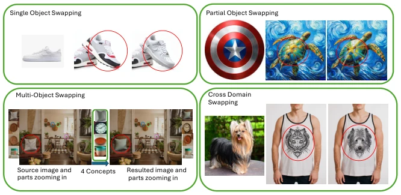
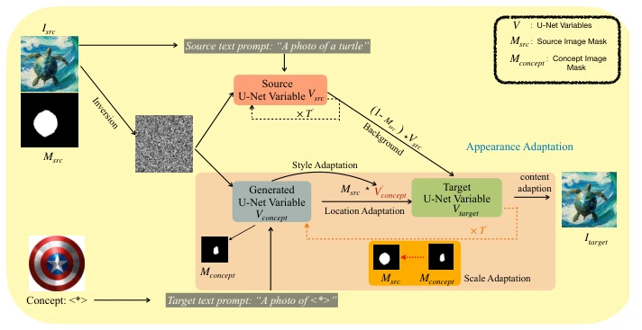
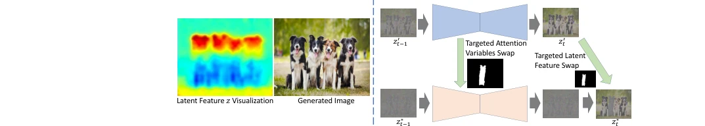
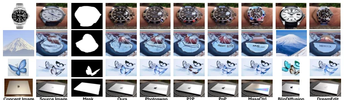
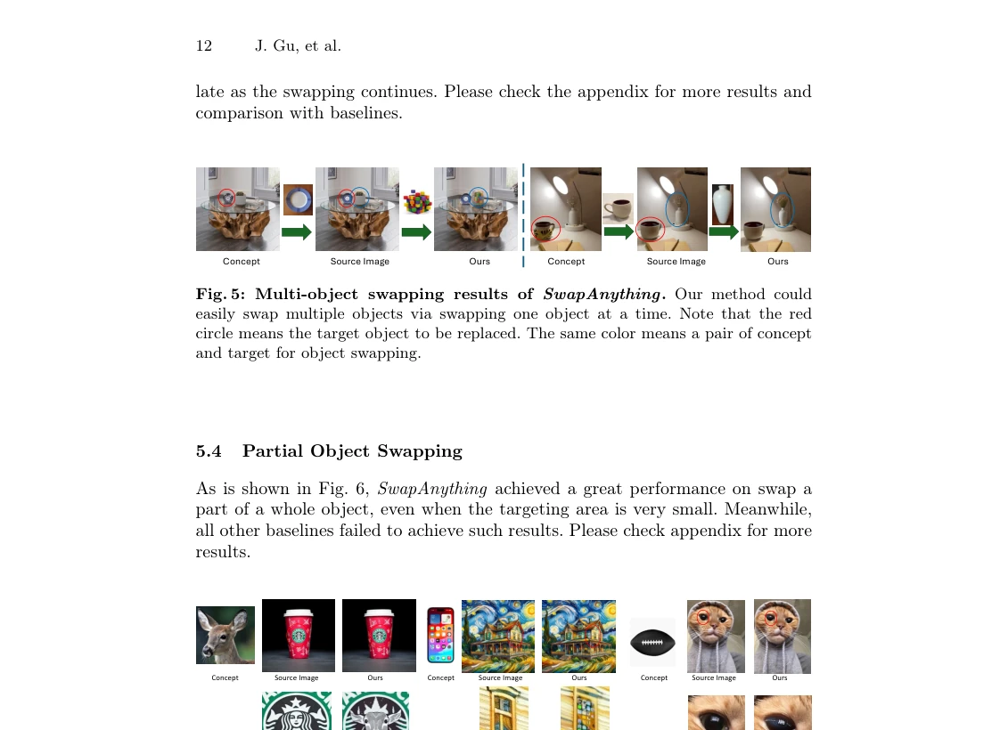
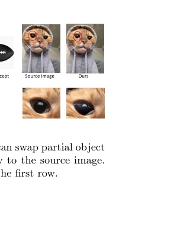
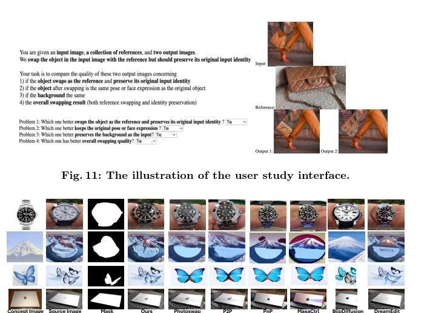
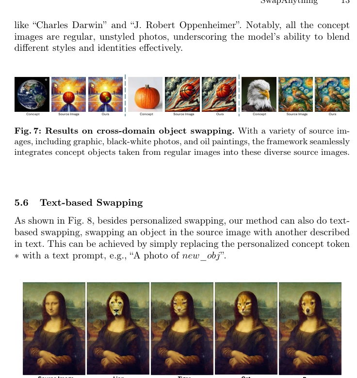
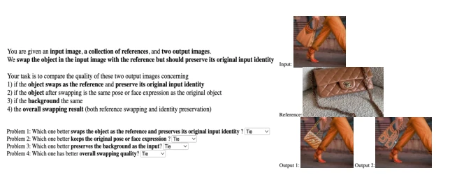
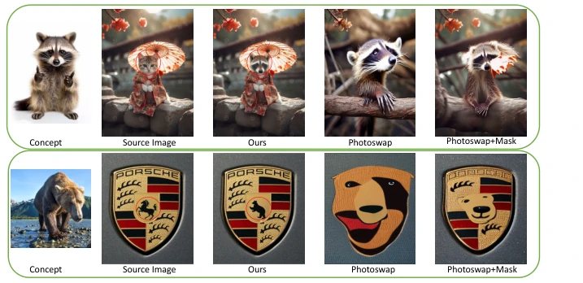

SwapAnything can be regarded as a "fine scalpel" in the field of diffusion model editing. The Adobe team did not pull any tricks this time, directly targeting the pain point of "arbitrary object" replacement, preserving the background as if it were welded in place. Compared to methods like Photoswap [13] that are prone to "exposing flaws", it is indeed stable. But do not get too excited too soon; it still relies on external mask tools and is still a distance from full automation. Moreover, ethical issues remain unresolved; who bears the risk of face swapping? Technically, it treats U-Net variables like building blocks; although the effect is stunning, computational overhead and mask dependency limit generalization. Overall, it is a professional tool, not a toy. For users pursuing high-fidelity editing, it is a boon, but for automated pipelines, mask generation remains a bottleneck.
Existing personalized editing methods are mostly limited to main subject replacement, or the background collapses after swapping. Although Photoswap [13] and DreamEdit [22] can swap objects, they cannot guarantee that pixels in non-target regions remain completely unchanged, leading to context pollution. What users need is "arbitrary object" replacement, including local, multi-object, or even cross-style, while existing methods lack precise control over local regions and cannot seamlessly fuse new concepts while maintaining the original image style. This limits its application in professional scenarios such as e-commerce and entertainment, because background consistency is the bottom line. Furthermore, existing methods often lose identity features during cross-domain style transfer, making it difficult to balance style and content, resulting in generated objects that are incongruous with the scene.

Fig. 1: SwapAnything results on various personalized image swapping tasks. SwapAnything is adept at precise, arbitrary object replacement in a source image with a personalized reference, and achieves high-fidelity swapping results without influencing any context pixels. We demonstrate its general swapping effect in single-object, multi- object, partial-object, and cross-domain swapping tasks.
The framework is divided into two stages. First, Targeted Variable Swapping: Invert the source image to latent space, obtain U-Net variables (latent feature z, attention map M, output phi). Utilize the mask to replace only target region variables during the diffusion process, retain background variables, achieving background locking. Second, Appearance Adaptation: Includes position adaptation (controlling new object position), style adaptation (Masked AdaIN aligns source image mean and variance), scale adaptation (Shape Guidance adjusts shape), content adaptation (Gaussian blur Mask smooths boundaries). Through these four-dimensional adaptations, the new object can seamlessly fuse with the source image in terms of position, style, shape, and content, avoiding stiff splicing. In particular, Masked AdaIN calculates statistics only on the mask region, ensuring style consistency.

Fig. 2: Overview of SwapAnything on swapping a object from a source image (Isrc) into a personalized concept (< ∗>) to get the target image (Itarget). The personalized concept is first converted into textual space to be treated as concept appearance. Meanwhile, the source image is first inverted into initial noise to obtain U- Net variables (including latent feature, attention map, and attention output). Targeted variable swapping preserves the context pixels in the source image. The appearance adaptation process then utilizes these informative variables to integrate the concept into the target image.

Fig. 3: Swapping process in SwapAnything. The left part shows the correspon- dence between latent feature z and the Generated image. The right part shows the procedure of targeted variable manipulation in the U-Net diffusion process.
Tested on Stable Diffusion 2.1, compared with baselines such as P2P, MasaCtrl, Photoswap. Human evaluation shows SwapAnything significantly outperforms baselines in Background Preservation (BP) and Overall Quality (OQ), with a win rate exceeding 50%. Supports single object, multi-object, local object (e.g., swapping only eyes), cross-style (photo to oil painting), and text replacement. Ablation studies show that removing latent swap leads to background changes, while removing style adaptation results in texture mismatch. Multi-object tasks are achieved through iterative single-object implementation, proving the method's scalability. In cross-domain tasks, it can integrate ordinary photos into oil painting style without distortion.

Fig. 4: Qualitative comparison with different baselines. Note that those baseline methods were already equipped with some components of SwapAnything for precise control of the swapping region. Please check Sec. 5.1 for details.

Fig. 6: Results on partial object swapping. SwapAnything can swap partial object that is tightly connected with other parts and adapt seamlessly to the source image. The second row is the zoom-in images of the swapping part in the first row.

Fig. 7 demonstrates that SwapAnything can adeptly handle a range of stylized source images, successfully adapting concept objects to match the desired style within the source image while seamlessly transferring identity into the generated images. For instance, when the source image is a photo of a certain style, yet SwapAnything skillfully generates the same painting style featuring personalities

Fig. 12: Comparison on single-object swapping with baselines in their orig- inal components. Please zoom in for a clear visual result.
其他图片Other Figures

Fig. 8: Results on text-based swapping. Besides swapping from concept image, SwapAnything is also capable of swapping an object described in text into the image.

Fig. 11: The illustration of the user study interface.

Fig. 13: Comparison with Photoswap on partial object swapping and cross- domain swapping. The upper part shows SwapAnything could localize the swapping area while Photoswap inevitably modified the background. In the lower part, SwapAny- thing adapts a bear into the style of a logo, while Photoswap failed on this cross-domain swapping task.